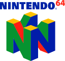

Rss feed added
read moreretro console development interests
I have interests in snes, genesis, gameboy, n64, xbox, and x360 consoles.
Posts in those categories may occur.
read moreipfs setup for pelican
To enable pelican's makefile to output ipfs add the following to your makefile
!makefile
read moreipfs: html ipfs swarm peers >/dev/null || (echo "ipfs daemon must be online to publish" && exit 1) ipfs add -r -q $(OUTPUTDIR) | tail -n1 >versions/current cat versions/current >>versions/history @export hash=`cat versions/current …64drive
 Recently got a 64drive HW3. Quite a nice piece of hardware.
As I have not found any documentation or examples covering wifi card usage, expect posts on that as I make/find some.
Also I discovered there is no way to do breakpoints over usb for debugging existing code...something …
read moreXMage and ipfs
Been tinkering with getting XMage working with ipfs.
First goal is getting an ipfs interface into mage then making all image assets be content aware references.
Second goal will be making a distributed server. I have some thoughts on this, expect more to come.
read more